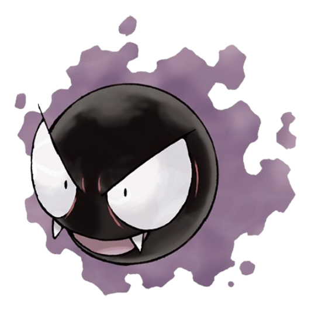
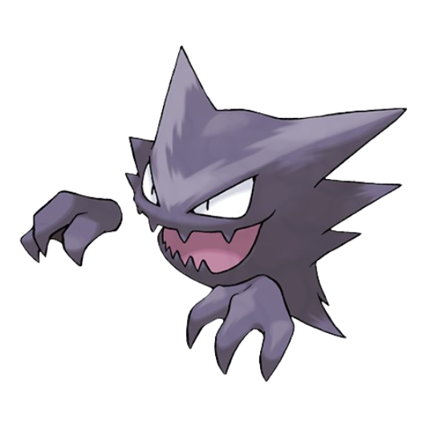

Tipo: fantasma veneno
Descripción:
haunter es un Pokémon de tipo fantasma y veneno. Es la evolución de Gastly y la pre-evolución de Gengar. Tiene un cuerpo gaseoso y una apariencia aterradora, con ojos rojos brillantes y una sonrisa siniestra. Haunter es conocido por su habilidad para atravesar paredes y su naturaleza traviesa, a menudo asustando a las personas con sus bromas. A pesar de su apariencia intimidante, Haunter es un Pokémon leal a su entrenador y puede ser un valioso compañero en batallas.